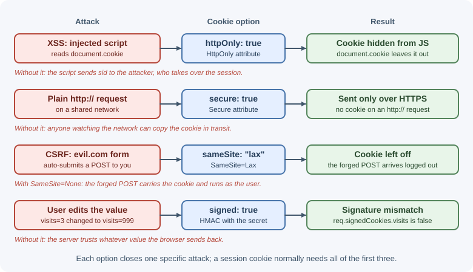
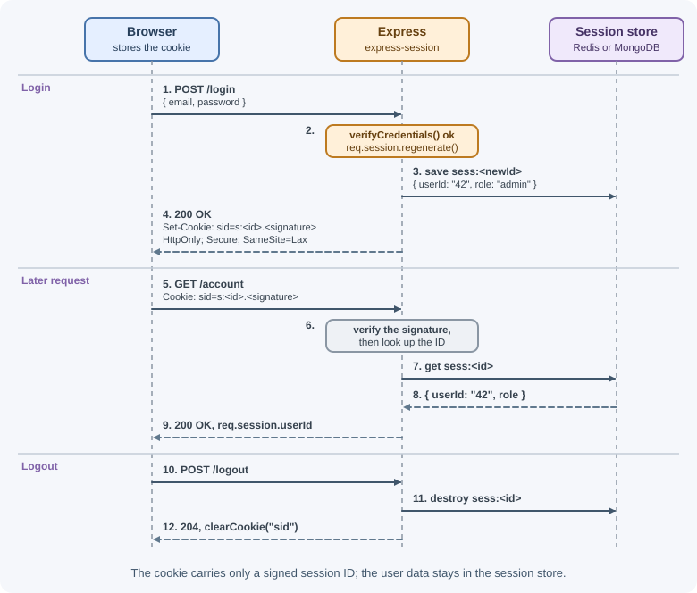

Cookies and Sessions in Express¶
HTTP is stateless: every request arrives on its own, with no memory of the
previous one. Cookies let a server ask the browser to store a small value and
send it back on later requests, and sessions build on cookies to remember who
a user is between requests. This lesson shows how to set cookies safely in
Express, how signed cookies work, and how to run server-side sessions with
express-session.
Why it matters¶
Almost every logged-in web experience depends on cookies: staying signed in, remembering a cart, keeping a language preference. A cookie that is set carelessly can be read by injected JavaScript, sent over plain HTTP, or attached to requests from another site. Those mistakes turn into session theft, session fixation, and cross-site request forgery (CSRF). Knowing what each cookie option does lets you choose settings on purpose instead of copying them.
For the general theory of sessions, cookies, and tokens, see sessions, cookies, and JWT.
Real-world usage¶
- GitHub signs users in with a session cookie: its
cookie list
describes
user_sessionas the cookie "used to log you in" for two weeks, plus a separate__Host-user_session_same_sitecookie that lets browsers supporting SameSite check whether a request originates from GitHub. This is the same pattern as this lesson: an opaque session cookie, with SameSite as a cross-site defense. - Google Chrome changed how cookies without a
SameSiteattribute behave. Google's web.dev guide explains that such a cookie is treated as if it wereSameSite=Lax, so sites that need a cookie in cross-site contexts must now opt in withSameSite=None; Secure. - Shopify found that cookies do not work reliably for apps embedded in its admin, which run inside an iframe on another site. Its documentation requires embedded apps to authenticate with short-lived ID tokens "because third-party cookies aren't reliably available in that context". Cookie-based sessions are the right tool when the app and API are the same site; cross-site embedding is where they break down.
Popular tools: express-session, cookie-parser, connect-redis,
connect-mongo, csrf-csrf, and csrf-sync; session data usually lives
in Redis or MongoDB.
How it works¶
Cookie recap¶
- The server sends a
Set-Cookieresponse header. - The browser stores the cookie under the server's site.
- On later requests that match the cookie's domain and path, the browser
sends it back in a
Cookierequest header.
Browser Express server
| POST /login |
|------------------------------------------>|
| 200 OK |
| Set-Cookie: sid=abc123; HttpOnly; |
| Secure; SameSite=Lax |
|<------------------------------------------|
| GET /account |
| Cookie: sid=abc123 |
|------------------------------------------>|
A cookie is only a name and a value plus attributes. It is not encrypted, and the user can read and edit it. Anything security-sensitive must either be an unguessable identifier (a session ID) or be signed so tampering is detected.
Setting cookies with res.cookie()¶
res.cookie(name, value, options) adds a Set-Cookie header. If value is
an object, Express serializes it as JSON (prefixed with j:).
| Option | What it does | What it protects against |
|---|---|---|
httpOnly |
Hides the cookie from document.cookie |
Theft by injected JavaScript (XSS) |
secure |
Sends the cookie only over HTTPS | Interception on plain HTTP networks |
sameSite |
"strict", "lax", or "none": controls cross-site sending |
CSRF and cross-site leaks |
maxAge |
Lifetime in milliseconds (Express converts it to Max-Age seconds) |
Cookies that live forever |
expires |
Absolute expiry as a Date |
Same as maxAge; prefer one of the two |
domain |
Which host(s) receive the cookie | Leaving it unset limits the cookie to the exact host |
path |
URL path prefix that receives the cookie (default "/") |
Sending a cookie to routes that do not need it |
signed |
Signs the value with the cookie-parser secret | Undetected tampering |
Without maxAge or expires, the cookie is a session cookie: the browser
deletes it when it decides the browsing session has ended.

SameSite in detail¶
Strict: never sent on cross-site requests, including clicking a link from another site. Safest, but users arriving from an email link appear logged out.Lax: sent on top-level navigations that use safe methods (such as following a link with GET) but not on cross-site POSTs, images, orfetch()calls. Some browsers useLaxas the default when the attribute is missing, but not all do, so always setSameSiteexplicitly.None: sent on all cross-site requests. Browsers requireSecurewith it. Use only when a different site genuinely needs the cookie, such as an embedded widget.
"Site" means the registrable domain: app.example.com and
api.example.com are the same site but different origins.
Reading cookies with cookie-parser¶
Express does not parse the Cookie header by itself. The cookie-parser
middleware fills two objects:
req.cookies: plain cookies.req.signedCookies: cookies whose signature verified. A tampered signed cookie appears asfalse.
How signed cookies work¶
When you pass a secret to cookie-parser and set signed: true, the stored
value becomes s:<value>.<signature>, where the signature is an HMAC of the
value using the secret. On each request cookie-parser recomputes the
signature. If someone changes the value, the signatures no longer match.
Signing proves the value came from your server; it does not hide the value. Never put secrets or personal data in a cookie because it is signed.
Server-side sessions with express-session¶
With express-session, the cookie holds only a random session ID. The data
lives on the server in a session store.

On each request the middleware reads the cookie, verifies its signature,
loads the session from the store, and exposes it as req.session. When the
response finishes, a changed session is saved back.
Important options:
| Option | Meaning | Recommended value |
|---|---|---|
secret |
Signs the session ID cookie. An array allows rotation: the first signs, all verify | A long random value from an environment variable |
name |
Cookie name (default connect.sid) |
A neutral name such as sid |
resave |
Save the session on every request even if unchanged | false (set it explicitly) |
saveUninitialized |
Store brand-new sessions that were never modified | false for login sessions; avoids storing empty sessions and setting cookies before consent |
rolling |
Reset the cookie expiry on every response | true for sliding expiry if you want it |
cookie |
Cookie options (httpOnly defaults to true) |
httpOnly, secure, sameSite, maxAge |
store |
Where session data lives | Redis or MongoDB store in production |
MemoryStore is not for production
The default MemoryStore keeps sessions in the process's memory. It
leaks memory over time, loses every session on restart, and does not
work across multiple processes or servers. Use a shared store such as
Redis (connect-redis) or MongoDB (connect-mongo).
Session lifecycle¶
| Moment | What to do | Why |
|---|---|---|
| Login succeeds | req.session.regenerate(), then store the user ID |
Prevents session fixation: an attacker cannot plant a known session ID before login |
| Privilege change | Regenerate again | Same reason |
| Each request | Read req.session.userId |
Identifies the user |
| Logout | req.session.destroy() and clear the cookie |
Removes the server-side session, not just the cookie |
Secure cookies behind a proxy¶
In production, TLS often ends at a load balancer or nginx, which forwards
plain HTTP to Express. Express then thinks the request is insecure, and
express-session refuses to send a secure cookie. Tell Express to trust
the proxy's X-Forwarded-Proto header:
app.set("trust proxy", 1); // trust the first proxy hop
Only trust proxies you actually run; see security best practices.
When to use and when not to use¶
Use cookie-based server sessions when:
- A browser app and its API are served from the same site (for example
app.example.comandapi.example.com), so the cookie is first-party. - You need instant logout and revocation: destroying the stored session ends access immediately.
- You want the browser to handle credentials automatically, with
HttpOnlykeeping them away from JavaScript.
Avoid them, or add something else, when:
- The client is a mobile app, CLI, or another server: a bearer token in the
Authorizationheader is simpler than managing a cookie jar. - The frontend is embedded on a different site (an iframe in a partner's page): third-party cookies are often blocked.
- You cannot run a shared session store and have several instances; use signed, self-contained tokens or a stateless cookie instead.
| Approach | State lives | Revocation | Best for |
|---|---|---|---|
Server session (express-session + Redis) |
Server store; cookie holds an ID | Immediate (destroy the session) | Same-site browser apps |
Signed cookie holding the data (cookie-session) |
In the cookie (size-limited, readable) | Hard until expiry | Tiny, non-sensitive state; no store available |
JWT in Authorization header |
Token on the client | Hard until expiry (needs a denylist or short expiry) | Mobile apps, service-to-service, third-party API clients |
JWT in an HttpOnly cookie |
Token in the cookie | Same as JWT | Browser apps that want stateless servers |
Practical examples¶
Setting, reading, and clearing a cookie¶
import express from "express";
import cookieParser from "cookie-parser";
const app = express();
app.use(cookieParser(process.env.COOKIE_SECRET)); // secret enables signing
app.post("/preferences/theme", express.json(), (req, res) => {
res.cookie("theme", req.body.theme, {
maxAge: 365 * 24 * 60 * 60 * 1000, // one year, in milliseconds
httpOnly: true,
secure: true,
sameSite: "lax",
});
res.sendStatus(204);
});
app.get("/preferences/theme", (req, res) => {
res.json({ theme: req.cookies.theme ?? "light" });
});
app.delete("/preferences/theme", (req, res) => {
// Options such as path and domain must match the ones used to set it.
res.clearCookie("theme", { httpOnly: true, secure: true, sameSite: "lax" });
res.sendStatus(204);
});
app.listen(3000);
The response to the first request contains:
Set-Cookie: theme=dark; Max-Age=31536000; Path=/; Expires=...; HttpOnly;
Secure; SameSite=Lax
A signed cookie¶
app.get("/visit", (req, res) => {
const visits = Number(req.signedCookies.visits ?? 0) + 1;
res.cookie("visits", String(visits), { signed: true, httpOnly: true });
res.json({ visits });
});
If a user edits the visits cookie, req.signedCookies.visits becomes
false, and the count restarts.
Sessions with a Redis store¶
import express from "express";
import session from "express-session";
import { createClient } from "redis";
import { RedisStore } from "connect-redis"; // named export in current versions
const redisClient = createClient({ url: process.env.REDIS_URL });
await redisClient.connect();
const app = express();
app.set("trust proxy", 1);
app.use(express.json());
app.use(
session({
store: new RedisStore({ client: redisClient, prefix: "sess:" }),
name: "sid",
secret: process.env.SESSION_SECRET,
resave: false,
saveUninitialized: false,
cookie: {
httpOnly: true,
secure: process.env.NODE_ENV === "production",
sameSite: "lax",
maxAge: 8 * 60 * 60 * 1000, // 8 hours
},
})
);
A MongoDB store is set up the same way:
import MongoStore from "connect-mongo";
app.use(
session({
store: MongoStore.create({ mongoUrl: process.env.MONGODB_URI }),
secret: process.env.SESSION_SECRET,
resave: false,
saveUninitialized: false,
})
);
Login and logout with regeneration¶
app.post("/login", async (req, res, next) => {
const user = await verifyCredentials(req.body.email, req.body.password);
if (!user) {
return res.status(401).json({ error: "Invalid email or password" });
}
// New session ID after login: defeats session fixation.
req.session.regenerate((err) => {
if (err) return next(err);
req.session.userId = user.id;
req.session.role = user.role;
// Save before responding so the next request sees the session.
req.session.save((saveErr) => {
if (saveErr) return next(saveErr);
res.json({ id: user.id, name: user.name });
});
});
});
app.post("/logout", (req, res, next) => {
req.session.destroy((err) => {
if (err) return next(err);
res.clearCookie("sid", { httpOnly: true, sameSite: "lax", secure: true });
res.sendStatus(204);
});
});
function requireLogin(req, res, next) {
if (!req.session.userId) {
return res.status(401).json({ error: "Login required" });
}
next();
}
app.get("/account", requireLogin, (req, res) => {
res.json({ userId: req.session.userId });
});
A simple CSRF defense: checking the Origin header¶
SameSite=Lax already blocks most cross-site POSTs. A cheap second layer is
to reject state-changing requests whose Origin header is not yours:
const allowedOrigins = new Set([process.env.APP_ORIGIN]);
function checkOrigin(req, res, next) {
const safe = ["GET", "HEAD", "OPTIONS"].includes(req.method);
const origin = req.get("origin");
if (safe || (origin && allowedOrigins.has(origin))) return next();
res.status(403).json({ error: "Cross-site request blocked" });
}
app.use(checkOrigin);
This check also rejects state-changing requests that send no Origin
header at all, such as curl or server-to-server calls. That is fine for a
browser-only, cookie-authenticated app; mount it only on cookie-based routes
if other clients use tokens instead.
For forms and older browsers, use a CSRF token pattern (synchronizer token
or double-submit cookie). The old csurf package is deprecated; maintained
alternatives include csrf-csrf and csrf-sync.
Best practices¶
- Set
httpOnly,secure, and an explicitsameSiteon every cookie that identifies a user. - Store only an opaque session ID in the cookie; keep user data server-side.
- Set
resave: falseandsaveUninitialized: falseexplicitly. - Use a shared store (Redis, MongoDB) in production, never
MemoryStore. - Regenerate the session on login and privilege changes; destroy it on logout.
- Keep secrets in environment variables and rotate them by passing an array
to
secret. - Give sessions both an idle limit and an absolute lifetime.
- Make GET routes safe (no state changes) so
SameSite=Laxactually helps. - Set
trust proxycorrectly when TLS ends at a proxy. - Rename the default
connect.sidcookie to avoid advertising your stack.
In production¶
- Users are logged out after every deploy or at random.
Detect: a jump in 401 "Login required" responses after restarts or when
traffic shifts between instances; at startup the process logs
Warning: connect.session() MemoryStore is not designed for a production environment. Cause: the defaultMemoryStore, so each instance has its own sessions and a restart wipes them. Fix: a shared store such as Redis throughconnect-redis. - Login "succeeds" but the next request is anonymous, only in
production. Detect: the login response in the browser's Network panel
has no
Set-Cookieheader. Cause:cookie.secure: truewhile TLS ends at a load balancer, so Express sees plain HTTP andexpress-sessionrefuses to send a secure cookie. Fix:app.set("trust proxy", 1)(matching your real proxy hops) or the session'sproxyoption. - The frontend on another domain gets 401s although login worked.
Detect: API requests in the Network panel carry no
Cookieheader, and the browser may flag the cookie as blocked. Cause: the cookie isSameSite=Lax(or third-party cookies are blocked) while the frontend is cross-site. Fix: serve app and API from the same site, or useSameSite=None; Securewith credentialed CORS, or switch to tokens. - Everyone is logged out right after a secret rotation. Detect: a sudden,
site-wide spike in "Login required" right after a config change. Cause:
the old
secretwas replaced, so existing signed session IDs no longer verify. Fix: pass an array[newSecret, oldSecret]so new cookies use the new secret while old ones still verify, and drop the old one later. - Redis memory keeps growing with session keys. Detect: the number of
sess:*keys andused_memoryinINFOgrow with traffic, mostly from anonymous visitors and bots. Cause:saveUninitialized: truestores a session for every visitor. Fix:saveUninitialized: falseand an explicitcookie.maxAge(connect-redis uses the cookie expiry as the key TTL).
Important terminology¶
- Cookie: A name-value pair the browser stores and sends back to a server.
- Session cookie: A cookie without
Max-Age/Expires; removed when the browser session ends. - Persistent cookie: A cookie with an explicit lifetime.
- Signed cookie: A cookie with an HMAC signature that detects tampering; still readable.
- Session store: Server-side storage that maps session IDs to data.
- Session fixation: An attack where the victim is made to log in with a session ID the attacker already knows.
- CSRF: Cross-site request forgery: another site makes the browser send an authenticated request.
- Trust proxy: An Express setting that tells it to believe
X-Forwarded-*headers from known proxies.
Common mistakes and misconceptions¶
- "Signed means encrypted." Signing only detects changes; anyone can read the value.
- Forgetting
cookie-parser.req.cookiesisundefinedwithout it. (express-sessionreads its own cookie and does not need it.) - Clearing with different options.
res.clearCookie()must use the samepathanddomain, or the browser keeps the old cookie. maxAgein seconds. Express expects milliseconds;maxAge: 3600is 3.6 seconds.- Using
MemoryStorein production. Sessions disappear on restart and do not work with more than one instance. secure: truewhile Express sees plain HTTP.express-sessionskips theSet-Cookieheader when the request is not HTTPS, so behind a proxy that terminates TLS the session cookie silently never arrives; configuretrust proxy.- Logging out by clearing only the cookie. The session stays valid on the server until it expires; destroy it.
- Assuming SameSite removes all CSRF risk. Same-site subdomains and state-changing GET routes can still be abused.
Revision questions¶
- What does each of
httpOnly,secure, andsameSiteprotect against? - How does
cookie-parserdetect that a signed cookie was modified? - Why should a session be regenerated after a successful login?
- Why is
MemoryStoreunsuitable for production? - What problem does
app.set("trust proxy", 1)solve for secure cookies? - How do
SameSite=Laxand an Origin check work together against CSRF?